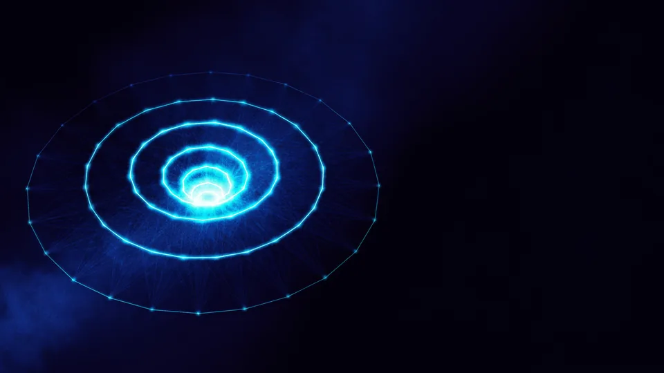

Uygulama Yaptırma Kararından Önce Hangi Soru Gelir?
Tek soru her şeyin önünde gelir: hangi sorunu çözüyorsunuz? Yanıtı tek cümleye sığmıyorsa kapsam da sığmaz. Ekran listesi, teknoloji ve bütçe bu cümleden sonra gelir. Uygulama yaptırma sürecinde en pahalı hata, sorunu tanımlamadan ekran çizmeye başlamaktır. O ekranlar sonra çöpe gider.
Görüşmelerin çoğu bir ekran listesiyle açılır. Oysa liste bir çözümdür; çözümün hangi soruna ait olduğunu kimse söylemez. Biz ilk oturumda ekran konuşmayız. Şunu sorarız: bugün bu iş nasıl yürüyor ve nerede tıkanıyor?
Yanıt somutlaştığında kapsam kendiliğinden daralır. Yaptıracağınız uygulamanın çözdüğü sorun tek cümleye sığıyorsa, iş tanımı da bir sayfaya sığar.
Bu soruyu kimin yanıtladığı da önemlidir. Kararı işi sahada yapan kişi verirse ürün gerçeğe yakın çıkar. Yalnız yönetim masasında tarif edilen uygulamalar, çoğu zaman kimsenin açmadığı ekranlarla dolar. En az bir kullanıcıyı ilk oturuma çağırın.
Sorunu Tek Cümleye İndirmenin Pratik Yolu
Cümleyi şu kalıba oturtun: “[kim], [hangi durumda], [neyi] yapamıyor.” Kalıp dolmuyorsa sorun henüz tanımlı değildir. Uygulama yaptırma görüşmesine bu cümleyle gelen ekiplerin kapsamı, gelmeyenlere göre belirgin biçimde dar olur.
Kullanıcınız Uygulamayı Ne Sıklıkla Açacak?
Sıklık, uygulamanın gerekip gerekmediğini belirleyen en keskin ölçüdür. Haftada birkaç kez açılan bir ürün uygulamayı hak eder. Yılda üç kez açılan bir işlem için mobil uyumlu sayfa yeter. Uygulama yaptırma kararını duygusal değil, bu davranış verisiyle verin. Elinizde veri yoksa önce onu toplayın.
Kullanım aralığı, ürünün ana ekranda kalıp kalmayacağını belirler. Kimse yılda iki kez açacağı bir simgeye yer ayırmaz. Mevcut sitenizin ziyaret sıklığı bu konuda iyi bir göstergedir; oradaki tekrar oranı size gerçek yanıtı verir.
Ölçüm yoksa tahmin edilir, tahmin de pahalıya patlar. Bir aylık basit bir kayıt bile kararı sağlamlaştırır. Kullanıcı davranışının arayüz kararlarıyla ilişkisini kullanıcı deneyimi yazısında ayrıca ele aldık.
Sıklığı ölçerken tek sayıya bakmayın. Aynı kullanıcının ne kadar aralıkla döndüğü, toplam ziyaretten daha çok şey söyler. Yüz kişinin bir kez geldiği bir ürünle on kişinin onar kez geldiği ürün, tabloda aynı görünür ama uygulama yaptırma gerekçesi bakımından taban tabana zıttır.
Sıklık Düşükse Uygulama Fikri Ölür mü?
Hayır, ama sırası değişir. Önce mobil uyumlu akışı kurun, sonra veriyi izleyin. Sıklık yükselirse uygulama yaptırma gerekçeniz artık tahmin değil ölçüm olur.
Bu İşi Uygulama mı, Mobil Site mi Çözer?
Dört ölçüt kararı verir: kullanım sıklığı, bildirim ihtiyacı, çevrimdışı çalışma ve donanım erişimi. Bunlardan biri bile şartsa uygulama anlam kazanır. Hiçbiri yoksa mobil uyumlu bir site aynı işi daha ucuza görür. Uygulama yaptırma isteğini bu dört ölçütle sınayın, moda akımıyla değil.
Tarayıcı son yıllarda çok yol aldı. Kamera, konum ve çevrimdışı önbellek artık web tarafında da çalışıyor. Ama anlık uyarı göndermek, arka planda konum izlemek ve mağaza rafında görünmek hâlâ uygulamanın işidir.
Bu ayrımı erken yapmak bütçeyi korur. Maliyeti hangi kalemlerin hareket ettirdiğini uygulama maliyeti yazısında kalem kalem açtık. Aşamaları ve takvimi ise geliştirme süreci yazısında anlattık.
Dört ölçütü tek tek sınayın, toplu bakmayın. Çoğu ekip “bildirim gönderelim” cümlesinde durur ve gerisini sormaz. Oysa e-posta ya da kısa mesaj aynı işi görüyorsa, tek başına bildirim ihtiyacı uygulama yaptırma gerekçesi sayılmaz.
Tek Kod Tabanı Sorusu Ne Zaman Gelir?
Uygulama kararı netleştikten sonra. Mimari seçimi ayrı bir tartışmadır; tek kod tabanı yaklaşımını hizmet sayfasında anlattık. Mekanizma farkını native mi cross-platform mı yazısında açtık. Karar sırasını bozmayın: önce gerekçe, sonra teknoloji.
Veriler Kimde Duracak, Kod Kime Ait Olacak?
Sözleşmede iki satır arayın: kaynak kodun mülkiyeti ve verilerin nerede tutulacağı. Bu iki satır yoksa ürün sizin değildir. Mağaza hesapları da kendi adınıza açılmalı, ajansın hesabına değil. Uygulama yaptırma görüşmesinde bunları sormamak, ilerideki en pahalı sessizliktir. Devir şartını baştan yazıya dökün.
Bu başlık teknik değil hukuki görünür, oysa ikisi de aynı kapıya çıkar. Yazılımın kendisi kimin elindeyse, ürünün geleceği de onun elindedir. Ajans değiştirmek istediğinizde bu satırlar sizi kurtarır.
Üç şeyi kendi adınıza kurun: mağaza geliştirici hesapları, alan adı ve bulut hesabı. Geliştirici ekip bunlara davetli olarak katılsın, sahibi olarak değil.
Verinin nerede durduğu ayrı bir sorudur. Kişisel veri işliyorsanız sunucunun ülkesi, saklama süresi ve silme yordamı sözleşmede yazılı olmalı. Bu satırları sonradan eklemek, yayına çıkmış bir üründe hem pahalı hem yavaş ilerler. Uygulama kişisel veri topluyorsa KVKK’nın veri sorumlusu yükümlülükleri sözleşmede baştan yazılmalı.
Devir Nasıl Sorunsuz Yapılır?
Depo erişimi, ortam değişkenleri ve kurulum belgesi ilk günden paylaşılsın. Yaptırma kararı uygulamanın son gününü değil ilk gününü bağlar; devir bittiğinde değil başladığında konuşulur.
“Ekran listesi bir çözümdür. Hangi soruna ait olduğunu yazmadan sipariş verirseniz, çözümü satın alır sorunu evde bırakırsınız.”
— TasarımMania kapsam görüşmesi notu
Ajansa Hangi Beş Soruyu Sormalısınız?
Beş soru ajansın gerçek kapasitesini gösterir. Benzer bir ürünü mağazada yayınladınız mı? Hata hâllerini kim çiziyor? Bakım ve kod devri nasıl işliyor? Yanıtları yazılı isteyin. Uygulama yaptırma görüşmesi bir sınav değil, ortak çalışma provasıdır. Sorularınıza net yanıt gelmiyorsa, sorun sizde değildir.
Bir ekibin ne yapabileceğini portföyünden çok, sorularınıza verdiği yanıt gösterir. Aşağıdaki beşi sırayla sorun ve yanıtları not alın.
- Yayın deneyimi — benzer bir ürünü hangi mağazalarda yayınladınız?
- Hata hâlleri — boş liste, kopuk bağlantı ve zaman aşımını kim çiziyor?
- Bakım — işletim sistemi sürümü çıktığında süreç nasıl işliyor?
- Devir — kaynak kod ve hesaplar bize nasıl geçiyor?
- İletişim — haftalık ilerlemeyi kim, hangi biçimde raporluyor?
Yanıtlar sözlü kalırsa unutulur. Yazılı isteyin; teklif ekine girsin.
Portföy Neden Tek Başına Yetmez?
Vitrindeki iş bitmiş hâliyle görünür; nasıl bittiği görünmez. İki yıl önce yayınlanan bir uygulamanın bugün ayakta olup olmadığı daha çok şey anlatır. Mağazada arayın, son güncelleme tarihine bakın. Yorumlara da göz atın: kullanıcıların bildirdiği hataların yanıtlanıp yanıtlanmadığı, ekibin bakım alışkanlığını portföyden daha dürüst anlatır.
Sorularınızı Birlikte Yanıtlayalım
Bu soruların çoğunu tek başınıza yanıtlamanız gerekmez. Görüşmede sorunu, kullanıcıyı ve kullanım sıklığını birlikte konuşuyoruz. Elinizde ekran listesi değil, karar gerekçesi kalıyor. Uygulama yaptırma kararını o gerekçeyle verirseniz sonradan dönüş yapmazsınız. Yanlış ürüne harcanan ilk üç ay hiçbir bütçeyle geri gelmiyor.
Kapsam oturumundan çıkarken elinizde bir sayfa olur: sorun, kullanıcı, sıklık, dört ölçüt ve devir şartları. Mobil uygulama hizmetimizi incelemek isterseniz sayfa hep açık. Yaptırmadan önce uygulamanızın gerekçesini yazıya dökmek, sonraki her kararı kolaylaştırır.

Uygulama mı, mobil site mi? Dört ölçüt
| Ölçüt | Uygulama gerekir | Mobil site yeter |
|---|---|---|
| Kullanım sıklığı | Haftada birkaç kez | Yılda birkaç kez |
| Bildirim ihtiyacı | Anlık uyarı şart | E-posta yeterli |
| Çevrimdışı çalışma | Bağlantısız da çalışmalı | Her zaman çevrimiçi |
| Donanım erişimi | Kamera, sensör, arka plan konumu | Gerekmiyor |
| Mağaza görünürlüğü | Rafta bulunmak önemli | Arama motoru yeter |
Uygulama yaptırma kararı teknolojiyle değil soruyla başlar. Sorunu, kullanıcıyı, sıklığı ve devir şartlarını yazıya döktüğünüzde geriye kalan her karar kendiliğinden kolaylaşır.